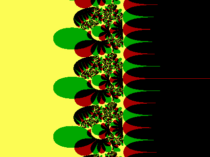

{kind=link}
{kind=link}
{kind=link}
{kind=link}
{kind=link}
{kind=link}
{kind=link}
{kind=link}
{kind=link}
{kind=link}
{kind=link}
{kind=link}
{kind=link}
{kind=link}
{kind=link}
{kind=link}
{kind=link}
{kind=link}
{kind=link}
{kind=link}
{kind=link}
{kind=link}
{kind=link}
{kind=link}
{kind=link}
{kind=link}
{kind=link}
 x: -5.3458 to 5.3458
x: -5.3458 to 5.3458y: -4 to 4
Fractals #2: Biomorphs
If you've visited my Fractals #1: the Cantor and Mandelbrot Sets page, you'll know how, in August 1985, an article in Scientific American's "Computer Recreations" column by A. K. Dewdney presented the Mandelbrot set to a large public audience for the first time.
That article was followed by several more on the subject of fractals over the next few years. The M-set (as Arthur C. Clarke calls it ) was again featured on some of these occasions; but other fractal types also made their appearance.
One in particular which caught my eye was presented in the July 1989 edition. Called "biomorphs", because of their similarity to certain types of living creatures, they are the discovery of Clifford A. Pickover (click here to visit his homepage; also have a look at this page).
According to the article, Dr. Pickover ran across these strangely biological-looking images by accident - they were the result of a bug (pun intended) in a program he was using to investigate something else! (Now there's a mathematician / scientist for you - take what ideas come your way, by whatever means, and check out their possibilities. You never know what you may find.)
Here's a creature of the type he found:
As you can see, it's like nothing you'll find in the Mandelbrot set! (You can click on it to see a 639×479 version.)
Clifford Pickover calls a biomorph of this type, with spikes radiating from an essentially circular centre with a symmetrical pattern inside, a radiolarian, because of its similarity to an aquatic creature by that name. Such patterns are generated by iterating a power of a complex number z, which is equal to x+yi (where i2 = -1).
The example above is generated by the cube of x+yi, which expands as follows:
z3 = (x+yi)3 = (x3 - 3xy2) + (3x2y - y3)i
Here's the DOS BASIC program I used to generate the above image:
REM ***** RADIOLARIAN - BLACK & WHITE *****
constreal = .5
constimag = 0
screenheight = 321
screenwidth = 429
aspectratio = screenwidth / screenheight: REM approx. 4/3
black = 0
white = 15
SCREEN 12: CLS : REM graphics screen, 640x480 pixels, 16 colours
ymax = 2.5
ymin = -ymax
xmax = ymax * aspectratio
xmin = -xmax
ilimit = screenheight - 1
jlimit = screenwidth - 1
FOR i = 0 TO ilimit
FOR j = 0 TO jlimit
x0 = xmin + (xmax - xmin) * j / jlimit
y0 = -ymin - (ymax - ymin) * i / ilimit
x = x0
y = y0
FOR n = 1 TO 100
xx = x * (x * x - 3 * y * y) + constreal: REM this line and the next give the cube
yy = y * (3 * x * x - y * y) + constimag: REM of the number, plus a constant
x = xx
y = yy
IF ABS(x) > 10 OR ABS(y) > 10 OR x * x + y * y > 10 ^ 2 THEN
n = 100
END IF
NEXT n
IF ABS(x) < 10 OR ABS(y) < 10 THEN
PSET (j, i), black
ELSE
PSET (j, i), white
END IF
NEXT j
NEXT i
a$ = ""
DO
a$ = INKEY$
LOOP UNTIL a$ = CHR$(27): REM wait until Esc is pressed to end the program
You can right-click here to download this BASIC program, bio_b&w.bas, to your hard disc.
You may have noticed four lines, in two pairs, in the above program highlighted in blue.
The blue lines in the second pair:
xx = x * (x * x - 3 * y * y) + constreal: REM this line and the next give the cube
yy = y * (3 * x * x - y * y) + constimag: REM of the number, plus a constant
determine the complex function which determines the overall shape of the image.
The blue lines in the first pair:
constreal = .5
constimag = 0
refer to the real and imaginary components of a constant complex number which is added at each iteration. Changing either or both of these makes a difference to the resulting image. Try it!
You may also have noticed two magenta lines near the top of the program:
screenheight = 321
screenwidth = 429
These determine the actual size of the image. You can put whatever values you like in here; I've chosen them in my examples to give an aspect ratio of approximately 4:3, but you don't have to.
Also, notice that they're both odd numbers. Making them odd allows the axes (or part thereof) to appear (if they "want to"). If you make them even, the axes won't appear (whether they "want to" or not ) - although short lengths of axis may still appear after all.
Sometimes it may be desirable to have the axes visible; sometimes it may not. You can decide this for a particular image. Note, however, that if you make one or both of these values even, so that the axis doesn't show, you'll find instead that whatever small part of the axis does appear anyway is two pixels wide and perhaps looks even worse than an unwanted single-thickness axis.
Personally, I find that an axis - even if not particularly welcome - is preferable to the double-thickness effects which may result instead. For this reason, the examples on this page are all 429×321 pixels (odd numbers); clicking on each will reveal a 639×479 pixel version (also odd numbers).
Also note, in this connection, that the figures given for the x-range in the examples to follow are all based on a 429×321 layout. (This differs slightly from the 639×479 case.)
The following image is produced by the above program, with the following alterations:
xx = x * x - y * y + constreal: REM this line and the next give the square
yy = 2 * x * y + constimag: REM of the number, plus a constant
and:
constreal = .4
constimag = .7
(Again, you can click on it to see a 639×479 version.)
I'll present some more examples - some with quite different shapes - shortly; but first, a bit more background on the topic, and then I'll present what I believe may be my own original "variation on the theme".
Having hunted around on the internet, I'm surprised to find scant reference to Pickover's biomorphs. There are a few oblique comments, and a bit of history - but I haven't been able to find any actual examples! So perhaps I'm performing a public service by presenting some of my own here. (Since having written this, I have found something - see below, toward the end of this page.)
As with the Mandelbrot set, these biomorphs inhabit the plane of complex numbers (the Argand plane). Also in common with the M-set, there is an iterative loop which processes points represented by screen pixels according to the overall shape (set by the function equations). The fine detail is set by the value of the complex constant.
Quite unlike the M-set, once the process exits the loop, the way a point is represented (black or white) is determined by the size of the real and imaginary parts of the value at exit.
The iterative loop is set to operate a set maximum number of times for each pixel. I set this to 100 iterations (maximum) in my version, although Dewdney's version only went to a maximum of 10 iterations. If the number is too small, you lose detail. 10 is probably OK, but I'm playing safe.
(With the M-set, it's usual to go to 1,000 or more iterations. I suspect that this is quite unnecessary with biomorphs.)
The condition for exiting the loop before the maximum is reached is that the modulus of the iterated number is greater than 10, or that the magnitude of either the real or imaginary part is greater than 10. Then, if the magnitude of either the real or imaginary part is less than 10, the pixel is coloured black - otherwise, it's coloured white.
This brings me to my own "variation on the theme", mentioned above.
The condition for setting the colour of each plotted pixel in the program is contained in the lines shown in orange:
IF ABS(x) < 10 OR ABS(y) < 10 THEN
PSET (j, i), black
ELSE
PSET (j, i), white
END IF
Now, that condition is actually two conditions in one. This led me to think that there are actually four possibilities, which means that we can have four colours in the resulting image.
So I decided to use red, green, yellow, and black as follows:
If ABS(x) < 10 and ABS(y) < 10, plot yellow;
If ABS(x) >= 10 and ABS(y) < 10, plot red;
If ABS(x) < 10 and ABS(y) >= 10, plot green; and
If ABS(x) >= 10 and ABS(y) >= 10, plot black.
Right-click here to download the modified BASIC program, bio_colr.bas, to your hard disc. (You can use this as a basis for all the other biomorphs in this page, as well as for any further investigations you may like to undertake yourself.)
This is the result of this program with the new colour algorithm, when applied to the first B&W example given above:
x: -2.5125 to 2.5125
y: -1.88 to 1.88
Function: z3
= (x3 -
3xy2)
+ (3x2y -
y3) i
Additive constant
= 0.5 + 0 i
Application:
Type 1
A few comments about the documentation accompanying this and later graphics:
The x and y ranges are given to five significant figures.
The additive constant consists of two parts: the real part (0.5 in this case), and the imaginary part (0 in this case). As already mentioned, these appear in the program as constreal and constimag respectively.
The "Application" of the constant may be either Type 1 or Type 2. All three examples given so far are of Type 1. This means that the constant is added to the function directly. With Type 2, the constant is not added directly, but is added in the next step, so as to affect the updated values of x and y for the next iteration without affecting the function's current value.
Thus in the last example above (Type 1), the program contains the following four lines:
xx = x * (x * x - 3 * y * y) + constreal
yy = y * (3 * x * x - y * y) + constimag
x = xx
y = yy
- whereas if it were decided to run a Type 2 process instead, those four lines would read:
xx = x * (x * x - 3 * y * y)
yy = y * (3 * x * x - y * y)
x = xx + constreal
y = yy + comstimag
The difference is somewhat akin to the difference (in programming terms) between passing by reference and passing by value. It may be subtle; but the effect on the resulting image may be profound.
I discovered this trick by experiment. Sometimes, if a Type 1 program's output looked a bit boring, I found I could spice it up by adding the constant in a different position - i.e. making it into a Type 2 program. (The sketch version given originally by Dewdney can be interpreted either way, but was probably intended to be of Type 1.) You may like to experiment with this yourself.
Of course, if the constant is zero (i.e. 0+0i), it doesn't make any difference. In the following examples, in such cases, I've put the application in brackets to indicate which I think might be the better type to use if you want to change the constant; but that's just my opinion, and I encourage you to experiment with both types.
Having now presented a reasonably in-depth discussion of how these biomorphs are created, I invite you to have a look at some further examples, starting with more radiolaria and then moving on to consider functions of other types. They all use four colours as described, and I'm keeping my black/red/green/yellow colour scheme. (Feel free to use other colours in your own experiments if you don't like mine!)
x: -2.6729 to 2.6729
y: -2 to 2
Function: z4
= (x4 -
6x2y2
+ y4)
+ 4xy(x2 -
y2) i
Additive constant
= 0.5 + 0 i
Application:
Type 2
You get the idea: positive integer powers of z, i.e. zn = (x+yi)n, give radiolaria with n-fold rotational symmetry.
The next one is based on z5 = (x+yi)5 = x5 - 10x3y2 + 5xy4 + (5x4y - 10x2y3 + y5) i .
(This is one of my personal favourites.)
x: -2.6729 to 2.6729
y: -2 to 2
Function: z5
Additive constant
= 0.75669 (1 + i)
(Very carefully
chosen to give
exactly the effect I
wanted)
Application:
Type 2
The next two are also fifth powers - this time, of the conjugate of z, i.e.
(x-yi)5 = x5 - 10x3y2 + 5xy4 - (5x4y - 10x2y3 + y5) i :
x: -3.0070 to 3.0070
y: -2.25 to 2.25
Function: [conj(z)]5
Additive constant
= 1 + i
Application:
Type 2
x: -3.0070 to 3.0070
y: -2.25 to 2.25
Function: [conj(z)]5
Additive constant
= -15888 + 0i
Application:
Type 2
The two following radiolaria (the last two in this page) are based on the seventh power of z, i.e. z7 = (x+yi)7
= x7 - 21x5y2 + 35x3y4 - 7xy6 + (7x6y - 35x4y3 + 21x2y5 - y7) i :
x: -2.6729 to 2.6729
y: -2 to 2
Function: z7
Additive constant
= 0.60595(1 + i)
Application:
Type 2
x: -2.6729 to 2.6729
y: -2 to 2
Function: z7
Additive constant
= 0.7568(1+i)
Application:
Type 2
As mentioned, radiolaria are generated by applying a certain iterative process to positive integer powers of complex numbers. It occurred to me to wonder what would happen if the process were applied to powers other than positive integers.
For a start, let's change the positive to negative. What simpler way to do so than to investigate what happens with a power of -1, i.e. to consider the reciprocal of a complex number?
If z = x+yi, then 1/z = (x-yi)/(x2+y2). Quite a surprise - the following very simple biomorph, based on the reciprocal function, is nothing like a radiolarian at all!
x: -0.1336 to 0.1336
y: -0.1 to 0.1
Function: 1/z = z -1
Additive constant
= 0 + 0i
Application:
(Type 2)
Not only does it not look like a radiolarian - it doesn't even look like a fractal. Just four overlapping circles, basically! However, you may find it interesting to experiment with values of the constant other than zero. (This provides a good example of how mathematicians should never take anything for granted!)
UPDATE, Wednesday, 2nd July 2014
I've just found something which quite possibly throws a considerable amount of light on the above graphic. Have a look at this link, about halfway down the page:
http://en.citizendium.org/wiki/taylor_series
I may return to some of the issues surrounding this in a future web-page - stay tuned...
(This is one of the really wonderful things about mathematics: there's always something else to learn!)
Another variation to the radiolarian format involves having something other than an integer for the power. Again keeping it simple, we'll try with a power of 0.5, i.e. the square root of z :
The "principal value" of the square root of x+yi is
{sqrt[sqrt(x2+y2) + x] + sqrt[sqrt(x2+y2) - x] × sgn(y) i} / sqrt(2)
where "sqrt" means square root of and "sgn" means sign of, i.e. ±1 or 0, depending on whether the number is positive, negative, or zero. (See this page - about a third of the way down - for a derivation of this square root formula.)
Here's the result:
x: -133.64 to 133.64
y: -100 to 100
Function: z½
= sqrt(z)
Additive constant
= 0+0i
Application:
(Type 2)
Again, it's interesting to play with the constant. Try varying either part, or both. The effects are intriguing.
Before moving on to more obviously "fractal"-looking biomorphs, here's one more somewhat similar to the last two - although, this time, there quite clearly is some "self-similar" behaviour occurring. For the first time, the function is not a standard form, but rather a concoction, just to see what happens:
x: -14.701 to 14.701
y: -11 to 11
Function:
x+y2 +
(x2+y) i
Additive constant
= 0+0i
Application:
(Type 2)
What's going on? Well, here's a clue to what I think is occurring:
Have a careful look at the main structures in the graphic, and try to relate them to the function. Then modify the program to operate on the function
x2-y + (xy+4) i
with ymax set to 12 and the constant set to zero (Type 2), and see what happens. (I suspect that a whole line of research could open up here...)
So far, the functions have all been algebraic. Now let's have a look at some transcendental functions, starting with basic trigonometric functions. Here's the expansion for cos(z) :
cos(z) = cos(x)cosh(y) - sin(x)sinh(y) i
= cos(x)(ey+e-y)/2 - sin(x)(ey-e-y)/2 i
- and here's its biomorph:
x: -29.402 to 29.402
y: -22 to 22
Function:
cos(z)
Additive constant
= 0+0i
Application:
(Type 2)
We shouldn't be too surprised to see the essentially periodic nature of this.
Similarly, sin(z):
sin(z) = sin(x)cosh(y) + cos(x)sinh(y) i
= sin(x)(ey+e-y)/2 + cos(x)(ey-e-y)/2 i
- and the biomorph:
x: -29.402 to 29.402
y: -22 to 22
Function:
sin(z)
Additive constant
= 0+0i
Application:
(Type 2)
Here's a blow-up of the central region of the sin(z) biomorph:
x: -4.6776 to 4.6776
y: -3.5 to 3.5
Function:
sin(z)
Additive constant
= 0+0i
Application:
(Type 2)
Note the appearance of "umbrella-like" structures in the cos(z) and sin(z) biomorphs. (These will appear again in later examples.)
Now here's a "trigonometrical doodle" function:
ey[1/|tan(x)| + |sin(x)| i]
Two things to note here: firstly, the straight brackets, | |, are "mod" or absolute value brackets [the corresponding BASIC function is ABS(...)]; secondly, tan(0) = 0, which means that we're effectively dividing by zero when x = 0 (or any multiple of pi) - so that a programming trick is required to avoid a crash. I just added a very small number, 10-15, to the tan(x). Quick and dirty - but it worked fine! (You'll find more examples of this kind of thing in later examples.)
Here's the biomorph:
x: -13.364 to 13.364
y: -10 to 10
Function:
ey[1/|tan(x)|
+ |sin(x)| i]
Additive constant
= 0.5+0i
Application:
Type 2
Cicadas, perhaps?
Trigonometric and exponential functions are closely associated, especially with regard to complex numbers; so it's natural at this point to move on to the exponential function itself:
ez = ex[cos(y) + sin(y) i]
- which is sometimes written as excis(y), where "cis" means "cos + i sin".
With different values of the constant, this provides some very attractive variations, as follows:
x: -2.5125 to 2.5125
y: -1.88 to 1.88
Function:
ez
Additive constant
= 0+0i
Application:
(Type 2)
x: -2.5125 to 2.5125
y: -1.88 to 1.88
Function:
ez
Additive constant
= 0.05+0i
Application:
Type 2
x: -2.5125 to 2.5125
y: -1.88 to 1.88
Function:
ez
Additive constant
= 0+0.5i
Application:
Type 2

x: -2.5125 to 2.5125
y: -1.88 to 1.88
Function:
ez
Additive constant
= 0.5+0.5i
Application:
Type 2
(That last one is another of my personal favourites.)
A final example in this group,
ex[sin(y-pi/4) + sin(y+pi/4) i] or, equivalently, ex[cos(3pi/4-y) + sin(3pi/4-y) i]
is shown here:
x: -13.364 to 13.364
y: -10 to 10
Function:
excis(3pi/4-y)
Additive constant
= 0+0i
Application:
(Type 2)
Just a thought: if you rotate this 90º clockwise, it may spook you out a
bit!
Note that the "umbrella-like" structures which appeared in the biomorphs for cos(z) and sin(z) also appear in those above, which are based on exponential functions.
Now, some examples based on the function zz.
This function can be expressed as ez ln(z) = e(x+yi)ln(x+yi), and then coded into a programming algorithm by proceeding as follows:
logreal = ln[sqrt(x2+y2)]
logimag = arctan(y/x)
if x<0 and y>0 then add pi to logimag
if x<0 and y<0 then subtract pi from logimag
indexreal = x×logreal - y×logimag
indeximag = x×logimag + y×logreal
function = eindexreal[cos(indeximag)
+ sin(indeximag) i]
Couldn't be simpler, could it?
Actually, that is somewhat of a simplification. The addition or subtraction of pi if x<0 is essential; but that still only gives the principal value of logimag. (Other values differ from the principal value by multiples of pi.) This means that there may be some "glitches" in the resulting biomorph.
Anyway, here it is:
x: -5.3458 to 5.3458
y: -4 to 4
Function:
zz
Additive constant
= 0+0i
Application:
(Type 1)
There's the "umbrella-like" structure again; but apart from that, it's not terribly exciting after all that work, is it? However, let's tweak the constant ever so slightly:
x: -5.3458 to 5.3458
y: -4 to 4
Function:
zz
Additive constant
= 0.001+0i
Application:
Type 1
That's quite dramatic. Next, a zoom-up on the "umbrella" to right of centre. Note that this time, the graphic is not centred on the origin. In fact, I did the following:
ymax = 1
ymin = -ymax
xmax = ymax * aspectratio
xmin = -xmax
- all as usual so far; but then:
xmin = -xmin/2
xmax = xmax * 2.5
- so that the graphic is centred on (2.0047,0).
x: 0.6682 to 3.3411
y: -1 to 1
Function:
zz
Additive constant
= 0.001+0i
Application:
Type 1
Reminds me a bit
of John Wyndham's
"Day of the Triffids"!
Multiplying the additive constant by 10 produces a quite spectacular effect:
x: 0.6682 to 3.3411
y: -1 to 1
Function:
zz
Additive constant
= 0.01+0i
Application:
Type 1
Finally, some "hybrids". These are biomorphs in which I allowed myself some freedom to play around with the function definitions, mixing and matching the various components from other, more standard functions.
First: something that looks like a Moiré pattern. The function is:
ex ln[10-9 + |cos(x+y2)|] + ey ln[10-9 + |sin(x2+y)|] i
x: -13.364 to 13.364
y: -10 to 10
Function:
(as given above)
Additive constant
= 0.5+0i
Application:
Type 2
Second: just a "doodle", basically. The function is:
esin(x)+cos(y) sqrt|x2y| + ecos(x)+sin(y) sqrt|xy2| i
x: -26.729 to 26.729
y: -20 to 20
Function:
(as given above)
Additive constant
= 0.5+0i
Application:
Type 2
Third: a biomorph of a type suggested by Clifford Pickover himself: the sum of zz and a radiolarian function. The examples given by Pickover used z6; we'll use z3:
x: -5.3458 to 5.3458
y: -4 to 4
Function:
zz +
z3
Additive constant
= 3-3i
Application:
Type 1
There might be a small "glitch" here, just to left of centre. If so, it may be caused by using the "wrong" value of arctan(y/x) there - i.e. the principal value, rather than that value plus some multiple of pi. I don't know enough about this to be able to analyze it further.
Well - plenty there, hopefully, to inspire you to generate some of your own! There's lots of scope for ideas; just jump in and experiment. Try the "hybrid" and "doodle" approach!
Actually, I haven't even covered all the "elementary" functions here; for example, the hyperbolic functions cosh(z) and sinh(z) are conspicuous by their absence other than as parts of the expansions into real and imaginary parts of cos(z) and sin(z) - see above. Their own expansions are, respectively:
cosh(z) = cosh(x+yi) = cosh(x)cos(y) + sinh(x)sin(y) i
and
sinh(z) = sinh(x+yi) = sinh(x)cos(y) + cosh(x)sin(y) i
Then, of course, there is tanh(z), which is equal to sinh(z)/cosh(z).
No doubt there are also ways to incorporate any or all of these into hybrid functions which may generate further interesting biomorphs.
And then there are logarithms, the trigonometric and hyperbolic inverses, and perhaps odd things like the Gamma function...
The sky's the limit!
Earlier I said that I hadn't found any other biomorph-specific web-pages. Since then (August 2005), I've found an attractive web-page devoted to biomorphs here . You can download the webmaster's own DOS program. Some of the graphics in this page are very attractive, and all are well documented. Definitely worth a look.
UPDATE, Thursday, 18th May 2017
This page is well overdue for an update!
The fact is, that last link stopped "working" quite some time ago, which is a pity, because it was a really delightful page (and even though I've searched long and hard to find it elsewhere, I haven't been successful). The reason I'm finally addressing the matter now, at long last, is that I've been going through some old emails, one of which was from someone a while back which drew my attention to another web-page which has some rather neat biomorph graphics on it. So, without further ado, may I invite you to have a look at this page:
http://www.apeirography.com/en/projects/biomorphs/
- and then check out the following page also, which features a larger version of one of those biomorphs along with a thought-provoking poem about the nature of mathematics in general, and fractals in particular:
http://www.eventhorizonmag.com/article/on-fractal-forms/
If you're the sort of person who is interested in fractals, it's possible that you may have run across biomorphs in a somewhat different context: not as a type of fractal in their own right, but as a modification to fractals of other types.
The excellent freeware fractal program FRACTINT handles biomorphs mainly in this way. You can produce a Mandelbrot set image, for example, with the biomorph option switched on. This will produce the characteristic spiky shapes evident in many of the graphics above within the contours of the resulting image.
Fair enough - but there's so much that you can do with biomorphs in their own right, without reference to other fractals - as in Pickover's own original vision - that it surprises me that they're not better known. Perhaps this page can help redress the balance.
A PARTING SHOT
Below, in place of my usual "Mad Teddy" lightbulb logos, you will see two copies of an animation generated by z3. It's a smaller (87×87 pixels), modified version of the first coloured biomorph presented near the top of this page: the constant (of modulus 0.5) changes in each of the 40 frames so that its argument progresses anticlockwise around the Argand plane by 3 degrees each time, starting from 0.5+0i in the first frame; in the line containing 10, 10, and 10^2, these are replaced by 5, 5, and 5^2; and black and yellow are interchanged. (Application is of Type 1.)
If you'd like to see a 427×321 version with 120 frames (1.2 Mb), click here.
Return to Computer Graphics sub-menu
My home page Preliminaries (Copyright, Safety)
{kind=link}